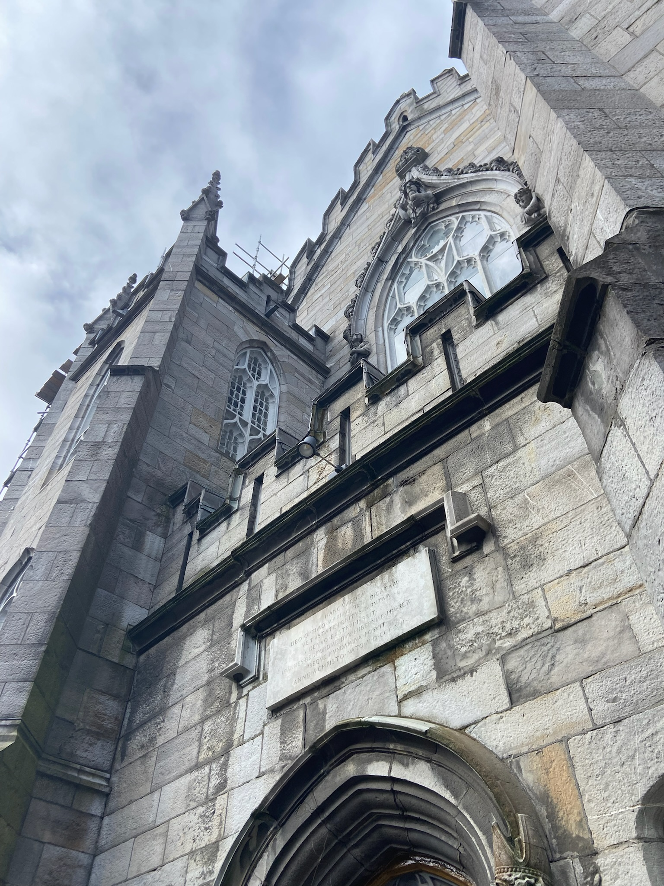
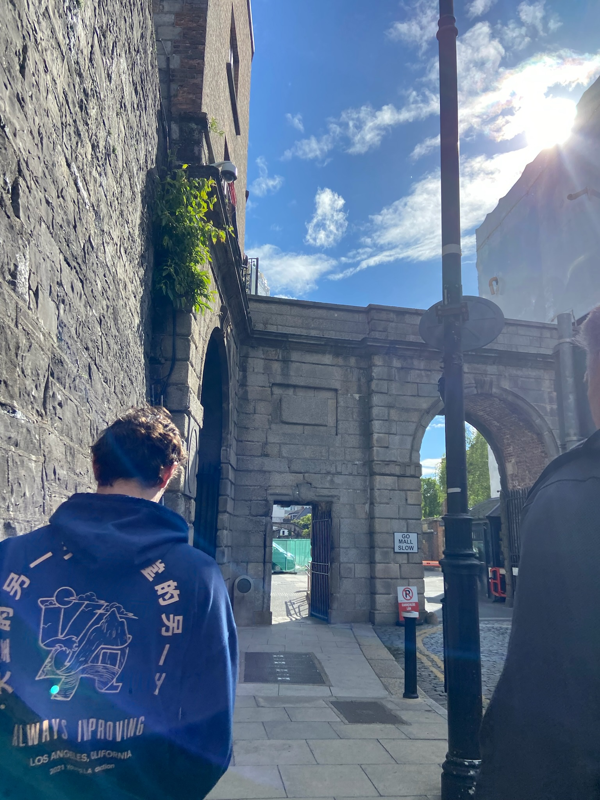
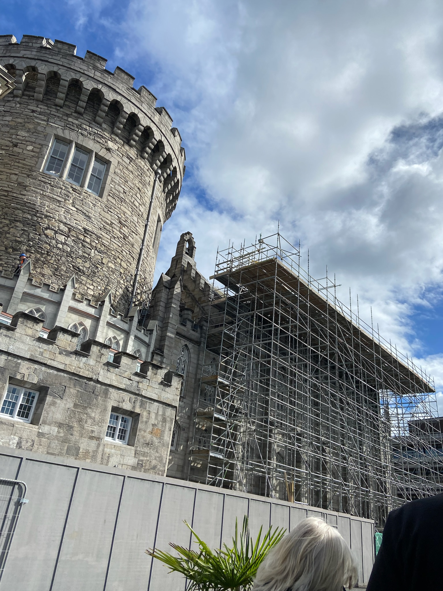
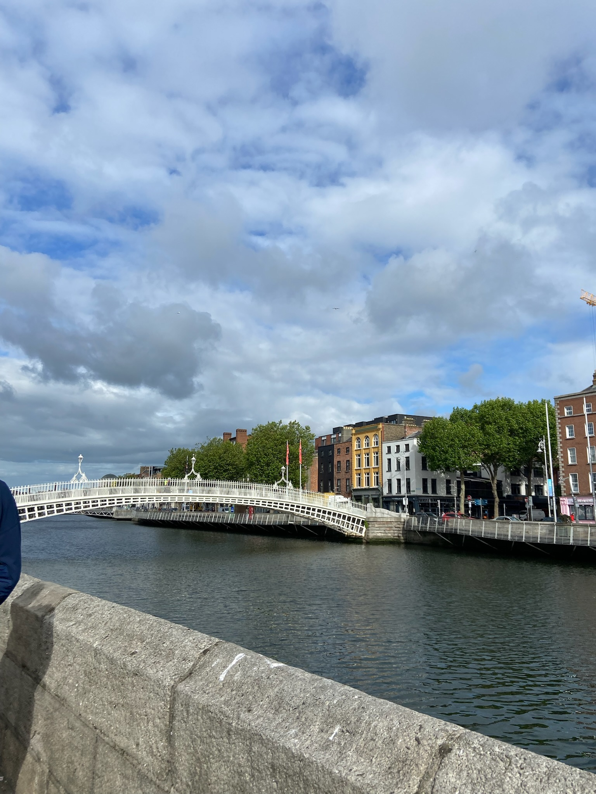

Our flight landed in Dublin, so that was where we spent the entire first day. The image on the left is of the Dublin Castle Dubh Linn Garden. You can't see them in their entirenty in the photo, but the lines on the garden are meant to represent sea serpents and come together to form a celtic knot. This lawn is on or near the site of the original dubh linn or 'black pool' in gaelic, where the Vikings harboured their ships and set up a trading base. It was this pool that gave its name to the city: Dublin.
The image on the right is also of the Dublin Castle. This is an image some of the windows and towers on the castle. We spent about 2 hours of our day at the castle due to the number of things to see there. After that, we were free to walk around and explore Dublin ourselves. The image below to the left is my dad and I walking through and old gate, the image below in the middle is another image of Dublin Castle, and the image below to the right is an image of the Ha'penny Bridge (the name comes from the old toll price, half a penny).
   